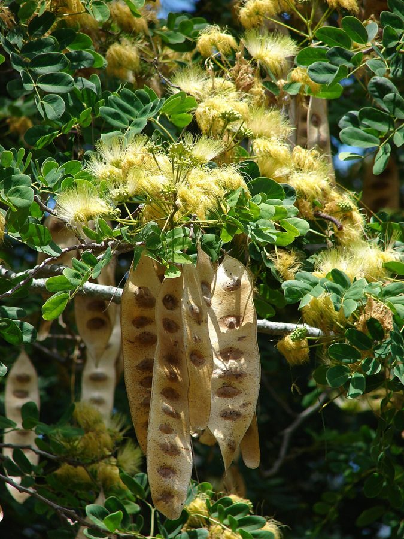

शिरीषSiris
Albizia lebbeck · Fabaceae · FLR-0048

- Scientific name
- Albizia lebbeck (L.) Benth.
- Family
- Fabaceae
- Hindi
- शिरीष
- Status here
- native
- IUCN
- LC
When to look कब देखें
Present all year.
शिरीष / Siris
Albizia lebbeck (L.) Benth. — Fabaceae
शिरीष (सिरस) — उत्तर प्रदेश के गांवों, सड़कों के किनारे और जंगलों में पाया जाने वाला एक बड़ा, तेजी से बढ़ने वाला पर्णपाती (deciduous) देशी पेड़ है। यह 15 से 25 मीटर की ऊंचाई तक पहुंचता है और इसकी छाया बहुत घनी होती है। वसंत ऋतु में (मार्च-मई) इसके पत्ते गिरने के बाद इसमें क्रीम-पीले रंग के सुगंधित फूल आते हैं, जो दिखने में रोएंदार गुच्छे (powder-puff) जैसे होते हैं। इन फूलों की महक बहुत मीठी होती है जो मधुमक्खियों को आकर्षित करती है। वर्षा ऋतु में इसमें चपटी, सूखी और भूरी फलियाँ (pods) लगती हैं, जो पकने के बाद पेड़ पर लटकी रहती हैं। सर्दियों और गर्मियों में जब हवा चलती है, तो ये फलियाँ आपस में टकराकर खड़खड़ाहट की आवाज (rattling sound) पैदा करती हैं, जिसके कारण इसे "महिला की जीभ" (woman's tongue) भी कहा जाता है। यह पेड़ नाइट्रोजन स्थिरीकरण (nitrogen fixation) द्वारा मिट्टी को उपजाऊ बनाता है।
Quick Identification त्वरित पहचान
| Feature | Description |
|---|---|
| Form | Large deciduous tree (15–25 m) with a broad, spreading canopy; older branches are grey-brown and smooth |
| Leaves | Alternately arranged, bipinnately compound (15–40 cm long); 2–4 pairs of pinnae, each carrying 6–10 pairs of large, oblong, asymmetrical leaflets |
| Flowers | Globose, brush-like, fragrant clusters (5–8 cm diameter) of greenish-yellow to cream flowers with numerous long stamens |
| Fruit | Large, flat, papery straw-yellow to brown pods (15–30 cm long, 3–5 cm wide), containing 6–12 flat rounded seeds; bulges over seeds are visible |
| Bark | Greyish-brown, rough, cracking into irregular rectangular flakes on older trunks |
| Acoustics | Dry pods rattle continuously in the wind, a key auditory identification feature during the dry season |
Field tip: Any large deciduous tree with large bipinnate leaves, cream-colored fluffy flowers in spring, and massive, flat, paper-like straw-colored pods that rattle loudly in the dry summer wind is a Siris tree.
Morphology आकारिकी
Biometrics (typical measurements for adult specimens in eastern UP plains):
| Feature | Measurement |
|---|---|
| Tree height | 15–25 m |
| Leaf length | 15–40 cm |
| Leaflet length | 2–4 cm |
| Leaflet width | 1–2 cm |
| Flower head diameter | 5–8 cm |
| Pod length | 15–30 cm |
| Pod width | 3–5 cm |
Leaves: The bipinnate leaves have a large gland on the petiole 1–3 cm above the base. Leaflets are oblong, unequal-sided at the base (asymmetrical), with the midrib closer to the upper margin.
Flowers: The brush-like appearance is created by the stamens, which are 2.5–4 cm long, white at the base and greenish-yellow at the tip. The flowers are highly fragrant, carrying a sweet, heavy scent.
Associated Species / Interactions सहजीवी संबंध
Pollinator hub and larval host.
- Pollinator magnet: During the spring flowering peak (March–May), the fragrant blossoms attract massive numbers of honeybees (Apis spp. including
[INS-0038 Dwarf Honey Bee]), wild solitary bees, butterflies, and nectar-feeding birds. - Larval host: The foliage serves as a primary larval host for several Pierid butterflies, particularly the grass yellows (Eurema spp.) and moths of the family Noctuidae.
- Avian shelter: The broad canopy and high branches are preferred nesting sites for crows (
[BRD-0027 House Crow],[BRD-0028 Jungle Crow]) and black kites ([BRD-0011 Black Kite]). - Rhizobial activity: Houses nitrogen-fixing root nodules that enrich agricultural soils, improving pasture growth under its canopy.
Life Cycle / Phenology जीवन चक्र
- Leaf fall: The tree sheds its leaves during mid-winter (January–February), becoming completely bare.
- Flowering: Fragrant cream-yellow blossoms emerge alongside new light green leaves in early spring (March–May).
- Fruiting: Flat green pods form by June, developing and drying to a papery straw-yellow color by August–October.
- Pod persistence: The dry pods remain hanging on the bare branches throughout winter and the following dry summer, falling only when new growth begins in spring.
Pests and Diseases कीट और रोग
- Stem Borer: The larvae of the longhorn beetle Xystrocera globosa tunnel into the inner bark and sapwood, causing branch dieback and killing weakened trees.
- Leaf-tier Caterpillars: Larvae of pyralid moths web leaves together and feed inside, causing seasonal defoliation during monsoon.
- Damping-off: Fungal pathogens (Pythium spp.) cause seedling rot in wet nurseries during the monsoon season.
Agricultural / Human Relevance कृषि प्रासंगिकता
Agroforestry shade, timber, and forage.
- Crop shade: Often planted in tea, coffee, and spice plantations as a light-filtering shade tree. In UP villages, it is grown in pasture borders to protect livestock from summer heat.
- Premium timber: The heartwood is dark brown, heavy, hard, and takes a high polish. It is highly valued for carving, paneling, high-quality furniture, and agricultural implements.
- High-protein fodder: The leaves and young twigs are harvested by farmers as a nutritious dry-season fodder for cattle and goats, containing up to 20% crude protein.
Traditional and Ethnobotanical Use
- Skin allergy treatment: Fresh leaf juice is applied topically to treat urticaria, eczema, and skin rashes.
- Mouth wash: A decoction of the bark is used as an astringent gargle to treat mouth ulcers, bleeding gums, and sore throat.
- Insect bite paste: A paste made from fresh bark is applied to snakebites and scorpion stings in folk medicine to reduce swelling (though medical care must be sought).
- Ayurvedic Shirisha: In Ayurveda, Shirisha is classified as a prime anti-toxic (Vishaghna) herb, used in formulations to treat asthma, respiratory allergies, and poisonings.
Expected Locally स्थानीय रूप से अपेक्षित
Not a field record. Written from published accounts for eastern Uttar Pradesh. No confirmed local sighting yet — if you have seen it, that is what the atlas needs.
अभी तक स्थानीय पुष्टि नहीं। यह विवरण प्रकाशित स्रोतों से है, किसी अवलोकन से नहीं।
Commonly seen along the state highways and district roads in Basti, Harraiya, and Khalilabad blocks. Often planted in school yards and village squares (choupals) to serve as a meeting point due to its expansive shade. During hot May afternoons, the sweet scent of blooming Siris trees is a noticeable characteristic of the local rural roadsides.
Distribution वितरण
Global range: Native to tropical South Asia (India, Pakistan, Bangladesh, Sri Lanka), Myanmar, and southern China. It has been widely introduced and naturalized in tropical Africa, northern Australia, and the Caribbean.
In India: Widespread in all deciduous forest tracts and plain states, from the sub-Himalayan tracts to South India.
In Uttar Pradesh: Common in all districts as an avenue tree and in scrub forest tracts.
In Basti district / eastern UP: Abundant native resident tree in rural and urban areas.
Research Questions शोध प्रश्न
- How does the soil nitrogen level directly under the canopy of Albizia lebbeck compare to open fields in Basti's agricultural soils? / बस्ती की कृषि भूमि में शिरीष के पेड़ के नीचे मिट्टी का नाइट्रोजन स्तर खुले खेतों की तुलना में कितना अधिक होता है?
- What is the preference of honeybee species (Apis florea vs. Apis cerana) for Siris flowers during the dry month of April? / अप्रैल के सूखे महीने में शिरीष के फूलों के लिए विभिन्न मधुमक्खियों की पसंद क्या होती है?
- Does the rattling sound of Albizia lebbeck pods act as an auditory cue for seed-eating birds or seed-dispersing rodents?
- Is the chemical compound lebbekanin in the seeds effective as an anti-fungal agent against local crop pathogens?
- Can school children gather five dry Siris pods, count the seeds in each, and calculate the average number of seeds per pod? — A simple, interactive math and botany exercise.
Similar Species मिलती-जुलती प्रजातियाँ
| Species | Key Difference | हिंदी |
|---|---|---|
| Albizia procera (White Siris) | Bark is smooth, light greenish-white or yellowish; leaflets are smaller; flower heads are smaller and greenish-white; pods are narrow and reddish-brown. | सफेद सिरस — चिकनी सफेद छाल, संकरी लाल फलियाँ |
| Albizia chinensis (Chinese Albizia) | Stipules are very large and leaf-like (auriculate); flower heads are pinkish-white; twig surfaces are velvety-hairy; less common in Basti. | चीनी सिरस — बड़े कान जैसे stipules, गुलाबी-सफेद फूल |
Butea monosperma (Palash [FLR-0037]) | Leaves are trifoliate (only 3 large leaflets); flowers are bright orange-red (not cream-yellow); pods contain a single seed at the tip. | पलाश — तीन बड़े पत्ते, चमकीले लाल फूल |
Taxonomy & Classification वर्गीकरण
Original description. Carl Linnaeus described the species as Mimosa lebbeck in 1753 in Species Plantarum (Vol. 2, p. 1503), from specimens collected in Egypt (where it was introduced). George Bentham transferred it to the genus Albizia as Albizia lebbeck in 1844 in London Journal of Botany (Vol. 3, p. 87). The genus name Albizia commemorates Filippo del Albizzi, an Italian nobleman who introduced the genus to European botany. The specific name lebbeck is derived from laebach, the traditional Arabic name for the tree.
Subspecies. Monotypic in northern India; no wild subspecies are recognized in the Gangetic plains.
Family and order placement. Placed in the order Fabales, family Fabaceae, subfamily Caesalpinioideae, tribe Ingeae.
Phylogenetic notes. Albizia is a monophyletic lineage closely related to Acacia sensu lato, sharing bipinnate leaves and numerous long, showy stamens.
IUCN status rationale. Evaluated as Least Concern (LC) by the IUCN Red List (specifically by the IUCN SSC Global Tree Specialist Group, 2024). It is widely distributed, highly adaptable, and under no immediate population threats.
Photo Gallery फोटो गैलरी
References संदर्भ
- Linnaeus, C. (1753). Species Plantarum. Laurentii Salvii, Holmiae, Vol. 2, p. 1503. [original description]
- Bentham, G. (1844). Notes on Mimoseae, with a synopsis of species: Albizia lebbeck. London Journal of Botany, 3, 87.
- Brandis, D. (1906). Indian Trees. Archibald Constable & Co., London.
- Hooker, J. D. (1878). The Flora of British India. Vol. 2. L. Reeve & Co., London.
- Botanical Survey of India. State Flora Series: Flora of Uttar Pradesh. BSI, Kolkata.
- GBIF Occurrence Data — Albizia lebbeck (2026). GBIF taxon key: 2973215.
- IUCN SSC Global Tree Specialist Group (2024). Albizia lebbeck IUCN Assessment.
Source file: species/flora/trees/siris.md